import scipy.stats as ss
import matplotlib.pyplot as plt
import numpy as np
from peak_counting import constantsSIMULACION TEORICA CONTEO DE PICOS
%matplotlib tkCargo datos 32.25 MHz
import pandas as pd
import os
#path = "/home/tomi/Documents/academicos/facultad/tesis/tesis/data/27-03/peak_width_decimation/3"
#df = pd.DataFrame()
#for filename in os.listdir(path):
# screen = pd.read_pickle(f"{path}/{filename}")
# df = pd.concat([df, screen], ignore_index=True)
# df.attrs = screen.attrs
#print(df.shape)
#df = df.iloc[2*16250:13*16250, :]
#df.reset_index(inplace=True)
#df.drop(['index', 'ch2'], axis=1, inplace=True)
#df.loc[:, "time"] = df.index / 32.25
#print(df.shape)
#df
path = "/home/tomi/Documents/academicos/facultad/tesis/tesis/measurement_scripts/2024-08-29/data/2024-09-09/0.2003_0.1000/380"
df_full = pd.DataFrame()
for filename in sorted(os.listdir(path)):
screen = pd.read_pickle(f"{path}/{filename}")
df_full = pd.concat([df_full,screen], ignore_index=True)
df_full.attrs = screen.attrs
df = df_full.iloc[::2, :]
#plt.plot(df_full.index, df_full.ch1, '.-')
#display(df_full)Grafico señal total
%matplotlib inline
sr = 62.5
fig = plt.figure(figsize=(10,8), dpi=300)
fig.subplots_adjust(bottom=0.15)
i=4
dfp = df.iloc[i*2**14:(i+1)*2**14, :]
dfp_full = df_full.iloc[:10*2**14, :]
plt.plot(dfp.index/sr, dfp.ch1, '-', linewidth=2, alpha=0.8)
#dfp = dfp.iloc[::2, :]
#plt.plot(dfp.index, dfp.ch1, 'o-', linewidth=2, alpha=0.8)
plt.xlabel("Tiempo ($\mu$s)", fontsize=15)
plt.ylabel("Voltaje (V)", fontsize=15)
#plt.savefig('images_tesis/pmt_signal.png')
#plt.savefig('images_tesis/pmt_signal.svg')
plt.show()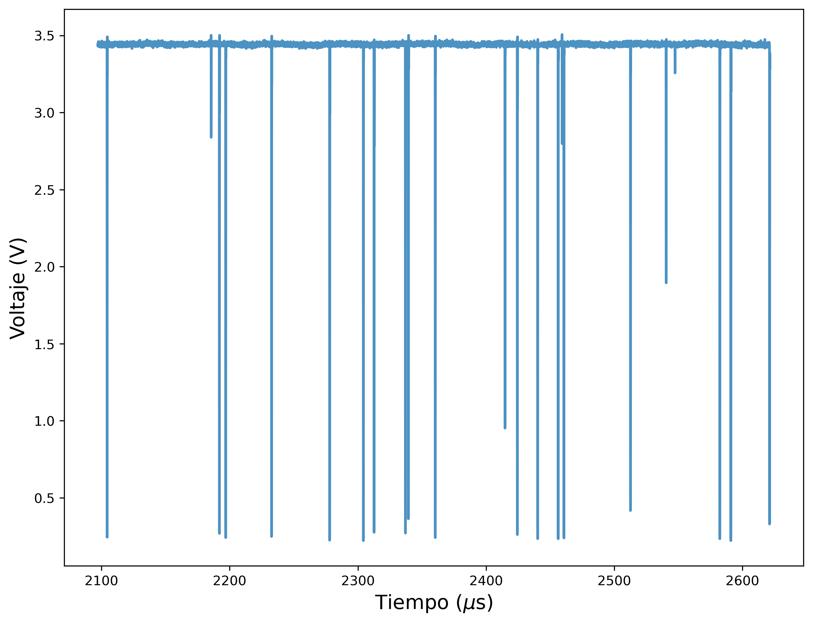
Picos solos
%matplotlib inline
#98760
#98810
#69960
#70050
fig, axs = plt.subplots(2, 1, figsize=(5, 8), sharex=True, dpi=300)
ax1, ax2 = axs
sr1 = 62.5
sr2 = 31.25
t0, tf = 98750/sr1, 98800/sr1
ax1.plot(dfp_full.index/sr1 - t0, dfp_full.ch1, 'o-', linewidth=2, alpha=0.8, color="C0")
ax1.plot(dfp.index/sr1 - t0, dfp.ch1, 'o-', linewidth=2, alpha=0.9, color="C1")
ax1.set_xlim([0, tf - t0])
#ax1.set_xlabel("Tiempo ($\mu$s)", fontsize=15)
t0, tf = 69940/sr1, 70030/sr1
ax2.plot(dfp_full.index/sr1 - t0, dfp_full.ch1, 'o-', linewidth=2, alpha=0.8, color="C0", label="62.5 MHz")
ax2.plot(dfp.index/sr1 - t0, dfp.ch1, 'o-', linewidth=2, alpha=0.9, color="C1", label="32.25 MHz")
ax2.set_ylabel("Voltaje (V)", fontsize=15)
ax2.set_xlim([0, tf - t0])
ax2.set_xlabel("Tiempo ($\mu$s)", fontsize=15)
ax1.set_ylabel("Voltaje (V)", fontsize=15)
plt.tight_layout()
plt.legend(loc="lower right", fontsize=15)
plt.savefig('images_tesis/picos_unicos.png')
plt.savefig('images_tesis/picos_unicos.svg')
plt.show()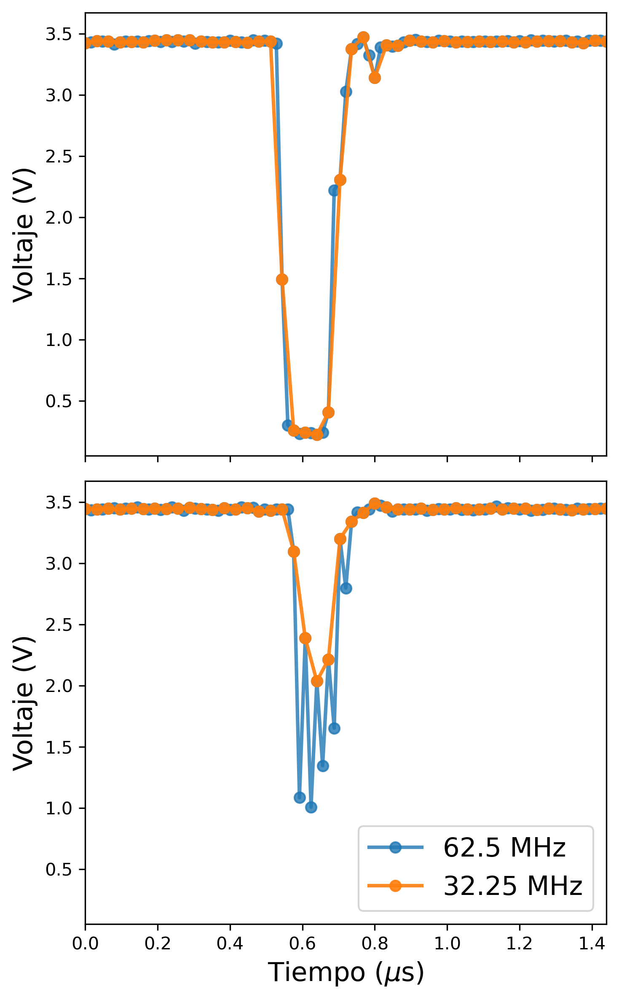
Histogramas de altura y cdf
%matplotlib inline
max_voltage = 3.4
df_hist = df["ch1"][df["ch1"] < max_voltage]
bins = np.arange(max_voltage, 0.1, -0.1)[::-1]
freq, bin_edges = np.histogram(df_hist, bins=bins, density=True)
sr = df_hist.attrs["sampling_rate"] * 1e-6
fig, axs = plt.subplots(2, 1, figsize=(4,5), sharex=True, dpi=300)
ax1, ax0 = axs
#ax0.set_title(f"{sr/2} MHz")
ax0.stairs(freq, bin_edges, fill=True)
ax0.set_ylabel("Frecuencia", fontsize=15)
bin_width = (bin_edges[1]-bin_edges[0])
x = np.cumsum(np.diff(bin_edges)) + bin_edges[0] - bin_width/2
ax1.plot(x, np.cumsum(freq)*bin_width, '.-', linewidth=1)
ax1.set_ylabel("CDF", fontsize=15)
ax1.grid()
ax0.grid()
ax0.set_yscale('log')
ax0.set_xlabel("Voltaje (V)", fontsize=15)
plt.tight_layout()
plt.savefig('images_tesis/histograma_puntos.png')
plt.savefig('images_tesis/histograma_puntos.svg')
plt.show()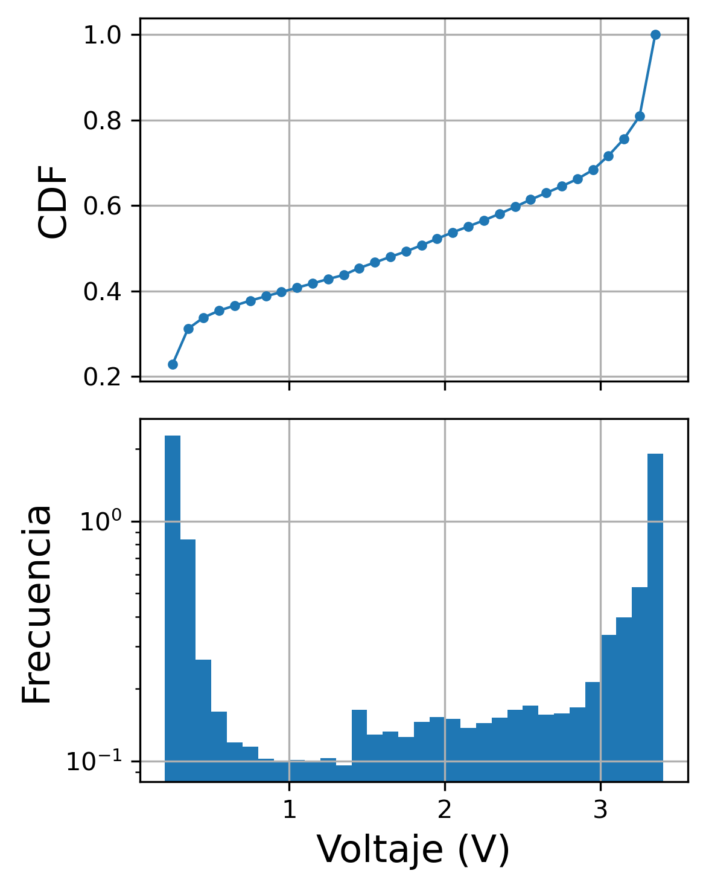
Sim picos uniforme
sr = 32.25
sample_fot = ss.uniform(scale=len(df)/sr).rvs(3000)
#time = np.linspace(0, 1, 10000)
#sig = np.ones_like(time) * 3.5
#sig = np.convolve(sig,)
#bins = np.linspace(0, 260e-6, 20)
plt.close('all')
fig, (ax0, ax1) = plt.subplots(2, 1)
bins = np.arange(0, len(df)/sr, 5000) # en us
bin_edges, freq = np.histogram(sample_fot, density=True, bins=bins)
ax0.stairs(bin_edges, freq, fill=True)
diff = np.diff(np.sort(sample_fot))
bins = np.linspace(0, 200, 100)
bin_edges, freq = np.histogram(diff, density=False, bins=bins)
ax1.stairs(bin_edges, freq, fill=True, color="C1")
plt.show()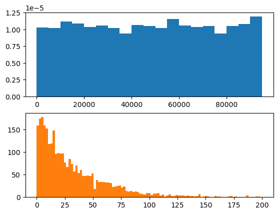
Sim con poisson
sample_fot = ss.poisson(mu=400).rvs(100000)
#time = np.linspace(0, 1, 10000)
#sig = np.ones_like(time) * 3.5
#sig = np.convolve(sig,)
#bins = np.linspace(0, 260e-6, 20)
bin_size_um = 5000
bins = np.arange(0, 1500, 1)
bin_edges, freq = np.histogram(sample_fot, density=True, bins=bins)
fig, (ax0, ax1) = plt.subplots(2, 1)
ax0.stairs(bin_edges, freq)
diff = np.diff(sample_fot)
bin_edges, freq = np.histogram(diff, density=True, bins=bins)
ax1.stairs(bin_edges, freq)
plt.show()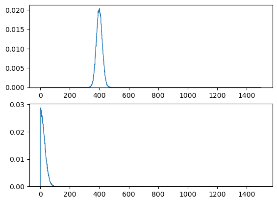
Defino funciones para encontrar picos
def find1(df, threshold=0.5):
return df.iloc[np.where(np.diff(df.ch1) > threshold)[0]]
def find2(df, threshold=-0.5):
return df.iloc[np.where(np.diff(df.ch1) < threshold)[0]]
def find3(df: pd.DataFrame, threshold=1.0):
dbin = (df.ch1 < threshold)*1
return df.iloc[np.where(np.diff(dbin) > 0)[0]]
def find4(df: pd.DataFrame, threshold=1.0):
dbin = (df.ch1 < threshold)*1
return df.iloc[np.where(np.diff(dbin) < 0)[0]]
def find5(df: pd.DataFrame, threshold=1.0, nsmooth=10):
dbin = (df.ch1 < threshold)*1
Devents = np.diff(dbin) > 0
Dsmooth = np.convolve(Devents,np.ones(nsmooth),mode='same')
Dbin = Dsmooth > 1/nsmooth
Ddiff= np.diff(Dbin.astype(int))
Devents=Ddiff>0
print(Devents)
return df.iloc[2:,:].iloc[Devents,:]
def find6(df, threshold=-1.0, max_samples=15):
df = find2(df, threshold=threshold)
return df.iloc[np.where(np.abs(np.diff(df.index)) > max_samples)[0], :]
def find7(df, threshold_s=0.8, threshold_d=1.0, max_samples=5):
df = find4(df)
return df.iloc[np.where(np.abs(np.diff(df.index)) > max_samples)]
def find_peaks_god(data,thres=0.5,nsmooth=10):
Dbin = data > thres
Ddiff= np.diff(Dbin.astype(int))
Devents=Ddiff>0
# soften peaks
Dsmooth = np.convolve(Devents,np.ones(nsmooth),mode='valid')
Dbin = Dsmooth > 1/nsmooth
Ddiff= np.diff(Dbin.astype(int))
Devents=Ddiff>0
peaksnumber = np.sum(Devents)
return peaksnumber
def find_peaks_god2(df, thres=1.0, nsmooth=10):
pass
def plot_analisis(df, func, pct=0.1, **kwargs):
plt.figure(figsize=(10,5))
df_plot = df.iloc[:int(len(df)*pct), :]
plt.plot(df_plot.index, df_plot.ch1, '.-')
plt.plot(df_plot.index[1:], np.diff(df_plot.ch1), '.-')
diff_antes = np.diff(df_plot.ch1)
df = func(df, **kwargs)
df_plot = func(df_plot, **kwargs)
#plt.plot(df_plot.index, diff_antes[df_plot.index], '.-')
plt.plot(df_plot.index, df_plot.ch1, 'o', color="k")
plt.plot(df_plot.index +1 , diff_antes[df_plot.index], 'o', color="gray")
return dfHago el analisis
%matplotlib tk
from functools import partial
def analisis(df, func, plot=True, **kwargs):
if plot:
data = plot_analisis(df, func)
else:
data = func(df)
sample_fot = data.index
sr = 32.25 #MHz
bin_size_um = 5000
sample_fot = sample_fot/sr
bins = np.arange(0, len(df)/sr, bin_size_um)
bin_edges, freq = np.histogram(sample_fot, density=True, bins=bins)
fig, (ax0, ax1) = plt.subplots(2, 1)
ax0.stairs(bin_edges, freq, fill=True, label=len(sample_fot))
ax0.legend()
diff = np.diff(sample_fot)
bins = np.linspace(0, 200, 100)
bin_edges, freq = np.histogram(diff, density=False, bins=bins)
ax1.stairs(bin_edges, freq, color="C1", fill=True, **kwargs)
ax1.legend()%matplotlib inline
for mx in range(0, 15, 1):
f = partial(find7, max_samples=mx)
analisis(df, f, plot=False, label=mx)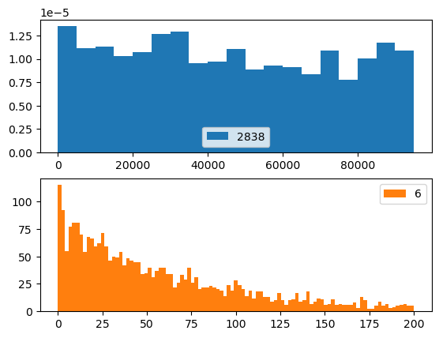
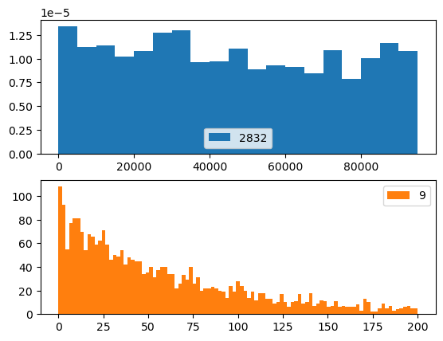
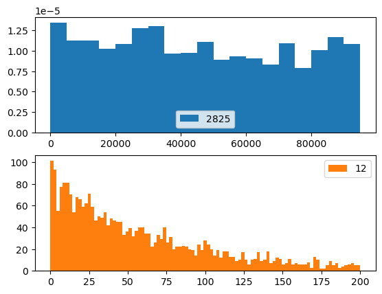
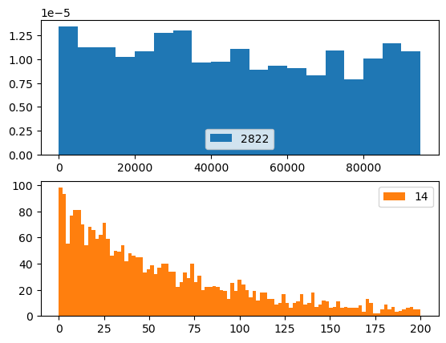
AUTOCORRELACIONES
screen_size = 5*2**14
autocorrs = []
vars = []
for i in range(19*2):
screen = df.iloc[i*screen_size:(i+1)*screen_size]
sig = screen.ch1 - np.median(screen.ch1)
var = np.var(screen.ch1)
vars.append(var)
autocorr = np.correlate(sig, sig, mode="full")
autocorrs.append(autocorr/(var*len(screen.ch1)))
lags = np.arange(-screen_size + 1, screen_size, 1)
plt.plot(lags, autocorr)
plt.show()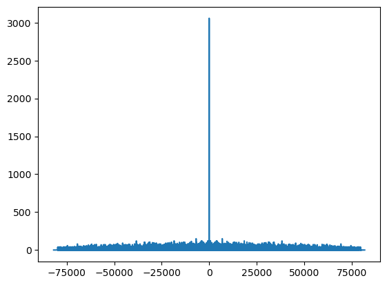
from scipy.optimize import curve_fit
def gaussian(x, a=1, mu=0, sigma=4):
return a*ss.norm.pdf(x, loc=mu, scale=sigma)
fwhms = []
plt.figure(dpi=300)
for autocorr in autocorrs:
#dtpts = len(autocorr)//2
#lags = np.arange(-dtpts -1, dtpts, 1)
#atcrr = autocorr / ((len(autocorr)//2) * np.var(screen.ch1))
lags = np.arange(len(autocorr)) - len(autocorr) // 2
#fit_indexes = np.where(np.logical_and(lags > -6, lags < 6))[0]
#lags_fit = lags[fit_indexes]
#atcrr_fit = autocorr[fit_indexes]
filter = np.where(np.logical_and(lags < 6, lags > -6))[0]
lags_fit = lags[filter]
autocorr_fit = autocorr[filter]
popt, pcov = curve_fit(gaussian, lags_fit, autocorr_fit, p0=[1, 0, 4])
filter_plot = np.where(np.logical_and(lags < 21, lags > -21))[0]
lags_plot = lags[filter_plot]
autocorr_plot = autocorr[filter_plot]
plt.plot(1000*lags_plot / 31.25, autocorr_plot, linewidth=4, alpha=0.1, color="C0")
x = np.linspace(-5, 5, 1000)
a, mu, sigma = popt
fwhm = 2 * np.sqrt(2 * np.log(2)) * sigma / np.sqrt(2)
fwhms.append(fwhm)
plt.plot([2000, 2001], [0, 0], label="Autocorrelación")
plt.plot(1000*x / 31.25, gaussian(x, *popt), linestyle="dashed", linewidth=2, color="black", label="Ajuste gaussiano")
plt.xlim([-1000*10/31.25, 1000*10/31.25])
print(np.mean(fwhms)/31.25)
fwhms = np.array(fwhms) / 31.25
fwhms = fwhms *1000
plt.xlabel("Tiempo de retardo (ns)", fontsize=12)
plt.ylabel("Autocorrelación normalizada", fontsize=12)
plt.legend(fontsize=12, loc="upper right")
plt.savefig('images_tesis/autocorr_gauss.png')
plt.savefig('images_tesis/autocorr_gauss.svg')
plt.show()
print(len(autocorrs))0.1127674799626409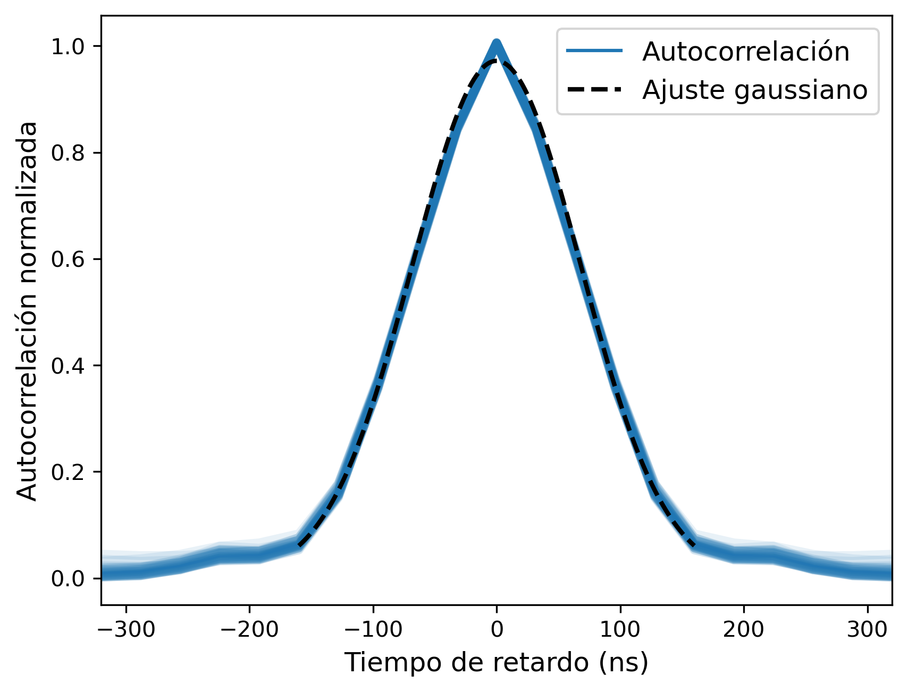
38
bins = np.linspace(111, 116, 7)
#freq, bin_edges = np.histogram(fwhms, )
plt.figure(dpi=300)
plt.grid()
plt.hist(fwhms, bins=bins, alpha=0.8)
plt.xlabel("Ancho del pulso a media altura (ns)", fontsize=12)
plt.ylabel("Cuentas", fontsize=12)
label = "$\Delta t =$" + f"{np.mean(fwhms):.0f}" + "$\pm$" + f"{np.std(fwhms):.0f}"
plt.axvline(np.mean(fwhms), linestyle="dashed", linewidth=2, color="k", label=label)
plt.legend(fontsize=15, loc="upper right")
plt.savefig('images_tesis/hist_anchos.png')
plt.savefig('images_tesis/hist_anchos.svg')
plt.show()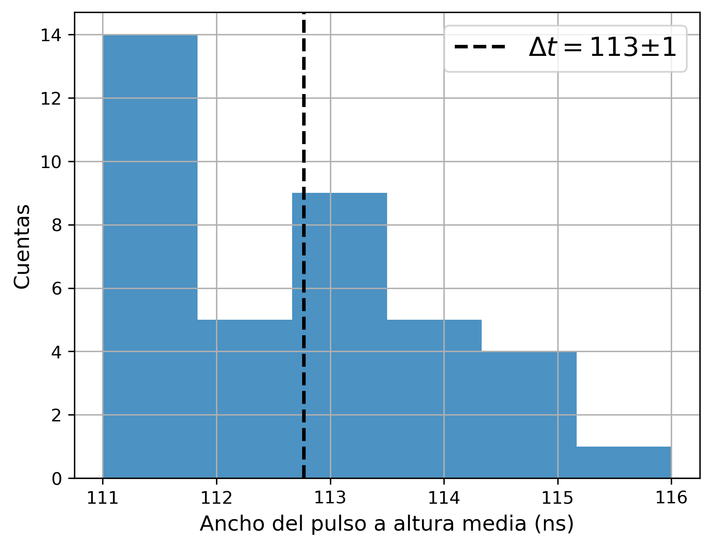